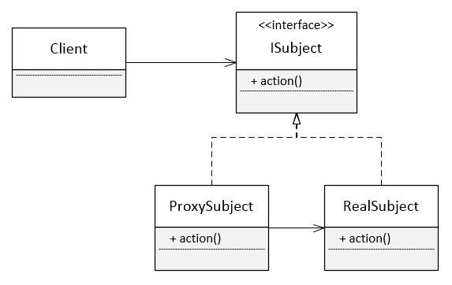
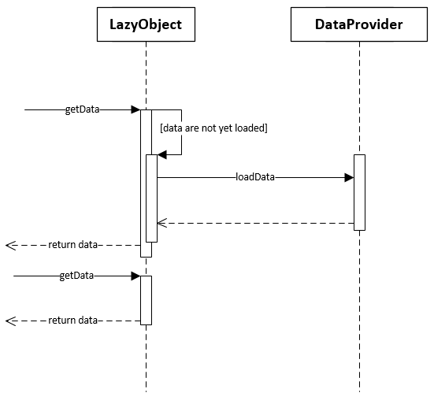

design patterns in action
www.gdgpardubice.cz
Úkol - výherce
Dnes není
Proxy
Malý veřejný objekt zastupující složitější (privátní) objekt, který je aktivován až za určitých okolností.
UML
Typy proxy
- Virtuální proxy
- předávání tvorby objektu nějakému jinému objektu
- Ověřovací proxy
- ověřuje, zda může klient přistoupit k chráněnému objektu
- Vzdálené proxy
- kódují požadavky a posílají je napříč sítí
- Chytré proxy
- přidávají nebo mění požadavky před jejich odesláním
Vzor Proxy použijete, když máte objekty, které
- jsou náročné na vytvoření,
- potřebují kontrolu nad přístupy,
- přistupují ke vzdáleným počítačům po síti,
- potřebují vykonat nějakou akci při každém přístupu k nim.
Vzor Proxy použijete, když chcete
- vytvořit objekty pouze tehdy, když jsou vyžadovány jejich operace,
- provádět kontrolu nebo údržbu objektů vždy, když jsou zpřístupněny,
- mít lokální objekt, který bude zastupovat vzdálený objekt,
- implementovat přístupová práva k objektům, když jsou vyžadovány jejich operace.
Jdeme kódit!
Shrnutí
Frontend ke třídám, které mají citlivá data nebo pomalé operace.
Vytváří se už v době návrhu aplikace. Nepřidává se dynamicky za běhu programu – rozdíl oproti dekorátoru.
Lazy loading
Načítání dat z úložiště až v momentě, kdy je to opravdu potřeba.
UML
Kde se používá:
Získávání dat z databáze
Objekty s vlastnosmi, které vznikají náročným výpočtem
Inicializace objektů až při prvním použití
Požadavky
Nejsou. Okolní kód netuší, že jde lazy.
Jdeme kódit!
Úkol
Shrnutí
Vykonává náročnou operaci až v okamžiku, kdy je to skutečně potřeba.
Tričko?
Za úkol!
Zadání
Vytvořte ukázkový příklad, který využívá některý z dnes ukázaných vzorů a jeden libovolný jiný.
(Jeden příklad využívající oba vzory současně.)
Autor nejrychleji odevzdané práce a autor nejlepší implementace bude odměněn.
Odevzdání: info@gdgpardubice.cz
Feedback
Prosím vyplňte krátký feedback:
gdgpardubice.cz/go/dpa4